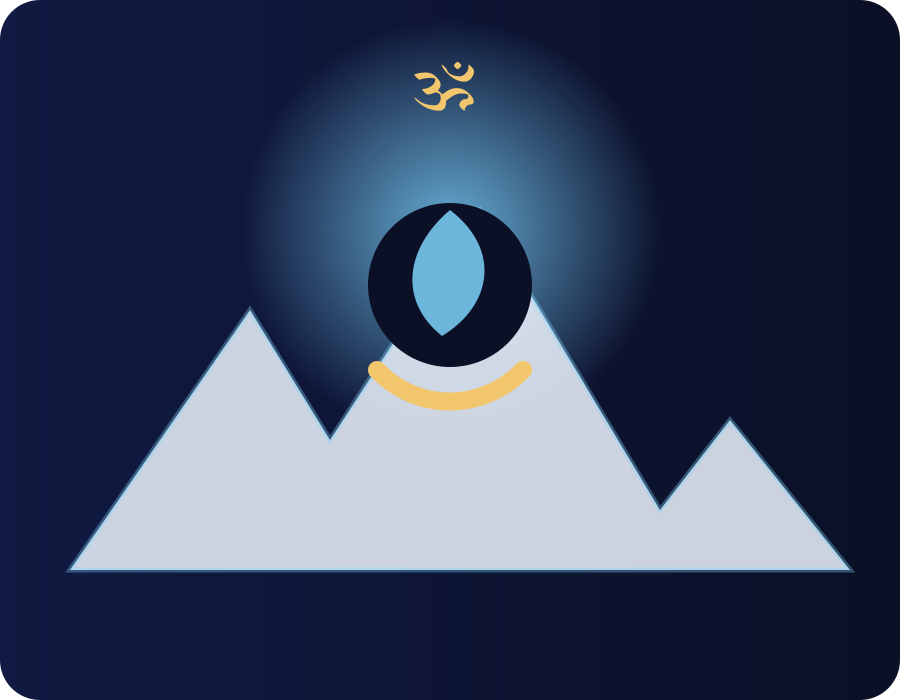

Mahadev
Shiva is honored as the great Lord: the compassionate destroyer of ignorance, ego and attachment.
ॐ नमः शिवाय
Explore Lord Shiva through original knowledge articles, sacred mantras, Jyotirlingas, temple guides, meditation tools, festival wisdom, and carefully curated YouTube references.

“When the mind becomes still, Shiva is experienced within.”
Knowledge Foundation
Respectful, original summaries for devotees, families and seekers.
Shiva is honored as the great Lord: the compassionate destroyer of ignorance, ego and attachment.
As Adiyogi, Shiva represents the first yogi and the source of inner transformation through discipline and awareness.
The cosmic dance of Shiva symbolizes creation, preservation, dissolution, concealment and grace.
Shiva drinks poison to protect creation, teaching sacrifice, courage and control over negativity.
Sacred Symbols

Mastery over body, mind and ego; creation, preservation and dissolution.

The sound of cosmic rhythm and the pulse of creation.
Silence, tapasya and the highest state of consciousness.

The primordial vibration used for meditation and inner alignment.
Chant & Understand
Each mantra includes Sanskrit, transliteration, meaning, benefits and suggested repetitions.
Curated References
These are embedded references only. Do not download or re-upload copyrighted content. You can later replace the links from the CMS/data file.
Daily Sadhana
Simple browser-based counter for Om Namah Shivaya or Maha Mrityunjaya japa.
Suggested target: 108 repetitions.
Sacred Geography
Each Jyotirlinga can later become a dedicated article with history, map, travel guide and official references.
Temple Directory
Kashi Vishwanath, Kedarnath, Somnath, Mahakaleshwar and more.
Pashupatinath and Himalayan Shiva traditions.
Shiva temples in UAE, UK, USA, Mauritius, Australia and beyond.
Add location, routes, timings and official temple references.
Festivals
The great night of Shiva: fasting, meditation, jaagran and mantra chanting.
Monday worship during the holy month of Shravan.
Twilight worship dedicated to Shiva and Parvati.